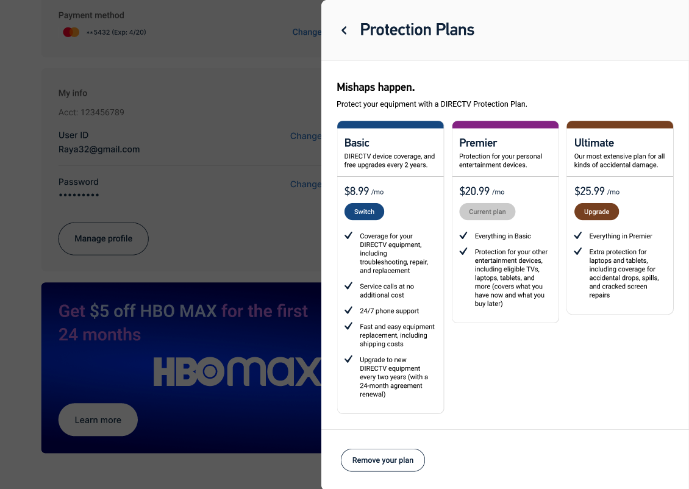

Saving $400,000 in yearly costs through a reimagining of equipment management.
Timeline
Jun 2023 - Present
Platform
Responsive Website
Role
UX Design Intern
Toolkit
Figma
View the Project
DirecTV is a major television programming distribution company that delivers entertainment solutions to households, businesses, and airlines throughout America. While they were founded upon (and continue to provide) service via satellite dishes, DirecTV is currently pivoting their business model towards aggregation of on-demand streaming content. As of August 2023, they serve 12 million customers across the nation.
For the duration of this project, I worked closely with a senior UX designer (Sharif). I collaborated with many others along the way, including members of the UX research team, my work leader (Karla), and my fellow interns in the IT department (pictured below)!
DirecTV recently went through the whirlwind of getting acquired by AT&T, then becoming independent once more. Since then, significant strides had been made towards re-establishing DirecTV as a separate entity, but their website did not entirely reflect this.
Another byproduct of DirecTV’s acquisition was that many elements of DirecTV’s website existed purely because of lift-and-shift, rather than any practical functionality. Some of these vestigial elements relied on costly API’s, and the process to order a new receiver box even required a visit to the call center. Combined, this meant that the old website used hundreds of thousands of dollars a year on costs that could be avoided.
In addition to improving the user experience of the account management side of DirecTV’s website, I was also tasked with implementing DirecTV’s new design system, Fusion. Doing so would not only help distinguish the brand as a standalone company, but also ensure that the entire website would feel cohesive and modernized.
After seeing how much DirecTV spent on its website, I hypothesized that there ought to be some unnecessary costs. I thus aimed to have users validate my conjectures about which features could be removed, so that DirecTV could refocus its money and resources on other, more meaningful things.
How might we make DirecTV account management a more seamless and intuitive experience for our customers?
My first steps were to investigate how users were currently interacting with DirecTV’s website. A look into DirecTV’s internal user data (courtesy of Google’s Looker Studio) revealed some key opportunities for possible UX improvements. Most notably, the conversion rate for managing a receiver was only 20.7% (this includes actions like refreshing or purchasing a new receiver). Similarly, the conversion rate for rescheduling an appointment with a technician came in at 51.0%.
Next, I took a deep dive into the current account overview experience, taking note of aspects that could be improved upon. This involved screen-grabbing and compiling comprehensive flows in order to cover all my bases and ensure that no bad piece of UX was left unturned. In the process, made sure to consider the nuances between different types of users, such as satellite versus stream customers.
Before I started to design, I created a user flow charting the potential paths a user could take once entering the account overview screen. In doing so, I was able to determine which flows to prioritize based on customer needs and use frequency, since I wouldn’t be able to cover everything in the course of one summer!
Afterwards, it was time to jump straight into ideating! I took a different approach than usual: incorporating the design system first before considering possible UX improvements. Doing so allowed me to better envision the redesign in the context of the entire website, which ultimately helped me decide how to move forward!
As I began building upon my initial designs, I frequently consulted my notes from the audit I conducted earlier in order to improve upon the old website. In the process, I used lots of rapid experimentation. My goal was to fail fast, so that I could improve faster.
Although I was working under a well-constructed and established design system, I encountered some issues with the modal side-sheet component as I continued designing. When scrolling in a Figma prototype, the component’s header and actions bar did not remain fixed in place as intended. To make matters worse, the component didn’t allow for more than one piece of content within it, restricting what you could use it for without de-componentizing it.
Seeing as how I was making extensive use of the modal for my redesign, I took it upon myself to reconfigure the component to remove these limitations. Doing so ended up cutting down my design speed significantly and allowed me to prototype twice as quickly!
At the time of writing this (August 2023), usability testing for this project is still ongoing! Stay tuned for insights and results.
These do not represent the final iteration of this project, only the designs as they stand as of August 2023.
Users now manage their equipment with a revamped page designed to reduce the cognitive overwhelm that users were previously faced with. It utilizes a new card design that dynamically changes based on the status of the device. To this end, the page comes in two main varieties, to account for the differences in Satellite and Stream devices.
I created an all-new flow to browse and purchase TV service receivers, replacing the current call-in ordering system. With this new system, the process of buying a new device feels more integrated and up-to-date, and DirecTV saves thousands in call center costs!
To better display DirecTV’s selection of equipment protection plans, I rearranged them in a side-by-side layout to allow users to more easily shop and compare plans at a glance. I also updated the infrastructure of the protection plan model with more user-friendly language—our user research found that “Ultimate” rolled off the tongue better than “DirecTV Protection Plan Premier with Accidental Damage from Handling”!
For the past orders page, I created a new table layout that provides more relevant and visually engaging content at a glance. Instead of being sent down a rabbit hole of tabs and support articles, users can now easily track their package or return an unwanted purchase with the click of a button.
One key discovery of my preliminary user testing was that people didn’t care much for the technician tracking feature on the appointments page—a feature that cost DirecTV $400,000 a year due to the APIs it ran on! Along with my supervisors, I made the business decision to remove the feature, and I also took care to give more structure and hierarchy to the page for improved scanability.
Because this redesign is still underway, it has not yet been deployed! That being said, the contents of this case study are slated to launch to DirecTV’s 12 million customers very soon.
Throughout our internship, me and the other IT interns were always told by our lovely supervisor Abbie to “be the Shark.” Inspired by Jon Gordon’s The Shark and the Goldfish, this was a mantra that reminded us to always be an exemplary worker: to embrace and ride waves of change, to choose faith over fear, to never your possibilities be limited by anyone else. It’s a mindset that truly defined my experience at DirecTV, and one that I’ll never forget.
I found one of the most extraordinary things about DirecTV to be the supportive and ready-to-help environment. Thanks to this, throughout my internship, I learned to get over my worries that I was just being an annoying intern and just ask for help when I needed it. Whether it was asking for more tasks, or asking for clarification on my project, I realized that reaching out isn’t a sign of weakness—in fact, it’s quite the opposite, and just another part of the Shark mentality.